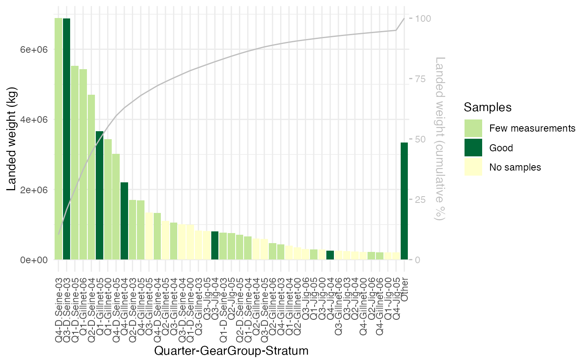

Plots a barplot of landings with color codes for how much each part of the fishery is sampled.
Usage
PlotSamplingCoverage(
ReportFdaSamplingData,
Cumulative = FALSE,
OtherPercentage = numeric(),
ColorScheme = c("CellPlot", "Gradient"),
Measurement = c("AgeReadings", "LengthMeasurements", "WeightMeasurements"),
UseDefaultColorSettings = TRUE,
MinVessels = integer(),
MinCatches = integer(),
MinMeasurements = integer(),
ColorNoSamples = character(),
ColorFewMeasurements = character(),
ColorFewCatches = character(),
ColorFewVessels = character(),
ColorGoodSampling = character(),
SamplingUnit = c("Vessels", "Catches", "Measurements"),
GradientLowColor = character(),
GradientMidColor = character(),
GradientHighColor = character()
)Arguments
- ReportFdaSamplingData
ReportFdaSamplingDatawith sampling report to plot- Cumulative
logical indicating if the cumulative fraction of the landed weight should be plotted on a secondary axis.
- OtherPercentage
Controls how many bars are shown. The smallest 'OtherPercentage' % bars are combined into one bar.
- ColorScheme
'CellPlot' or 'Gradient'. See details. Defaults to CellPlot.
- Measurement
The kind of fish measurement that should be used to determine the color of a cell. Defaults to AgeReadings.
- UseDefaultColorSettings
Logical, whether to use default color settings or the values specified in other arguments to this function.
- MinVessels
For color scheme "CellPlot". The minimum number of vessels sampled for a quality "Good" coloring of a cell. Defaults to 2.
- MinCatches
color scheme "CellPlot". The minimum number of catches sampled for quality "Good" or "Few vessels" coloring of a cell. Defaults to 2.
- MinMeasurements
color scheme "CellPlot". The minimum number of measurements (parameter 'Measurement') for quality "Good", "Few vessels" or "Few catches" coloring of a cell. Defaults to 100.
- ColorNoSamples
Color to use for cells not sampled. Defaults to #ffffcc.
- ColorFewMeasurements
Color to use for cells with few measurements. Defaults to #c2e699.
- ColorFewCatches
Color to use for cells with Few Catches. See details. Defaults to #78c679.
- ColorFewVessels
Color to use for cells with Few Vessels See details. Defaults to #31a354.
- ColorGoodSampling
Color to use for cells with Good sampling. See details. Defaults to #006837.
- SamplingUnit
color scheme "Gradient". The sampling unit used: "Vessels","Catches", or "Measurement"
- GradientLowColor
Color to use for low end of color gradient. See details. Defaults to #ffffcc.
- GradientMidColor
Color to use for middle of color gradient. See details. Defaults to #c2e699.
- GradientHighColor
Color to use for high end of color gradient. See details. Defaults to #006837.
Details
Plots an ordered barplot of landings for each part of the fishery identified by the grouping variables of 'ReportFdaSamplingData'. This visualizes the efficiency of the sampling, in the sense that sampling intensity is compared with total landings.
The bars, each representing a part of the fishery are colored to representing the sampling of each part, according to one of the following color schemes:
color scheme 'Gradient'
The color scheme 'Gradient' colors the bars according to how many sampling units are sampled. The sampling unit counted is controlled by the argument 'SamplingUnit':
- "Vessels"
The gradient reflect the number of vessels sampled
- "Cacthes"
The gradient reflect the number of cacthes sampled
- "Measurements"
The gradient reflect the number of measurements taken (see argment 'Measurement')
The colors used in the gradient is controlled by the arguments GradientLowColor, GradientMidColor, and GradientHighColor
color scheme 'Cellplot'
The color scheme "CellPlot" colors the bars similar to the color scheme used in PlotSamplingOverviewCell.
It uses a color coding that indicates five categories of sampling
depending on how many vessels, catches, and individuals are sampled in the cell.
The coloring is controlled by the arguments 'MinVessels', 'MinCatches', and 'MinMeasurements':
- Good
Cell has sufficient number of individuals, catches and vessels sampled.
- Few vessels
Cell has sufficient number of individuals and catches sampled, but not sufficient number of vessels
- Few catches
Cell has sufficient number of individuals sampled, but not sufficient number of catches
- No samples
Cell is not sampled
See also
Provide data for this plot with ReportFdaSampling
Examples
#plot to inspect sampling coverage
samplingReport <- RstoxFDA::ReportFdaSampling(RstoxFDA::StoxBioticDataExample,
RstoxFDA::StoxLandingDataExample,
GroupingVariables = c("Quarter", "GearGroup", "Stratum"))
PlotSamplingCoverage(samplingReport, Cumulative = TRUE, OtherPercentage = 5)
